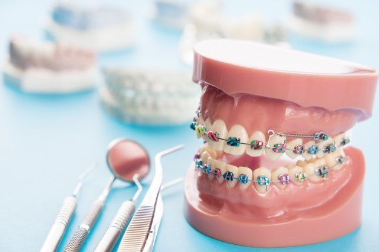

<!--Top bar-->
<mat-toolbar class="toolbar-color">
    <mat-toolbar-row>
        <button mat-icon-button>
      <mat-icon (click)="sidenav.toggle()" class="menu">menu</mat-icon>
    </button>
        
        <span class="menu-spacer"></span>

        <div class="logout-button">
            <a mat-button mat-raised-button class="logout" id="logout-button" (click)="openModal()"> Logout </a>
        </div>

    </mat-toolbar-row>
</mat-toolbar>

<!--Sidenav-->
<mat-sidenav-container class="sidenav">
    <mat-sidenav #sidenav>
        <mat-nav-list>
            <a mat-list-item (click)="sidenav.toggle()" routerLink="new-user" routerLinkActive="active"><span style="color: #1e326b;"> New User </span> 
                <mat-icon mat-list-icon class="icon"> person_add </mat-icon> 
             </a>
            <mat-divider [inset]="true"></mat-divider>
            <a mat-list-item (click)="sidenav.toggle()" routerLink="users-list" routerLinkActive="active"> <span style="color: #1e326b;"> Users List </span>
                <mat-icon mat-list-icon class="icon"> supervisor_account </mat-icon>
            </a>
            <mat-divider [inset]="true"></mat-divider>
            <a mat-list-item (click)="sidenav.toggle()" routerLink="new-service" routerLinkActive="active"> <span style="color: #1e326b;"> New Service </span>
                <mat-icon mat-list-icon class="icon"> storage </mat-icon>
            </a>
            <mat-divider [inset]="true"></mat-divider>
            <a mat-list-item (click)="sidenav.toggle()" routerLink="received-messages" routerLinkActive="active"> <span style="color: #1e326b;"> Received Messages </span>
                <mat-icon mat-list-icon class="icon"> inbox </mat-icon>
            </a>
            <mat-divider [inset]="true"></mat-divider>
            <a mat-list-item (click)="sidenav.toggle()" routerLink="sent-messages" routerLinkActive="active"> <span style="color: #1e326b;"> Sent Messages </span>
                <mat-icon mat-list-icon class="icon"> message </mat-icon>
            </a>
            <mat-divider [inset]="true"></mat-divider>
            <br><br><br><br><br><br><br><br><br><br><br><br>
            <a mat-button (click)="sidenav.toggle()" class="sidenav-btn"> <span style="color: #1e326b;">Close Sidenav</span> </a>
        </mat-nav-list>
    </mat-sidenav>

    <mat-sidenav-content>
        <div style="height: 90vh;">

            <!--  -->

            <router-outlet></router-outlet>
        </div>
    </mat-sidenav-content>
</mat-sidenav-container>